Every result the package returns draws itself. plot(x)
needs nothing but the object; the chart is the one that result calls
for, drawn with base graphics (no new dependency), with one shared look
across the package. Every method takes the same customisation, and every
method returns the numbers it drew, so a figure can be checked or
redrawn another way.
One call per result
Stock and flow after Lakner (1976): the average daily population and the length of stay, one panel per measure.
sf <- stock_flow(days = c(13500, 14600, 15100, 14200), people = c(300, 320, 310, 290),
period = 2020:2023)
plot(sf)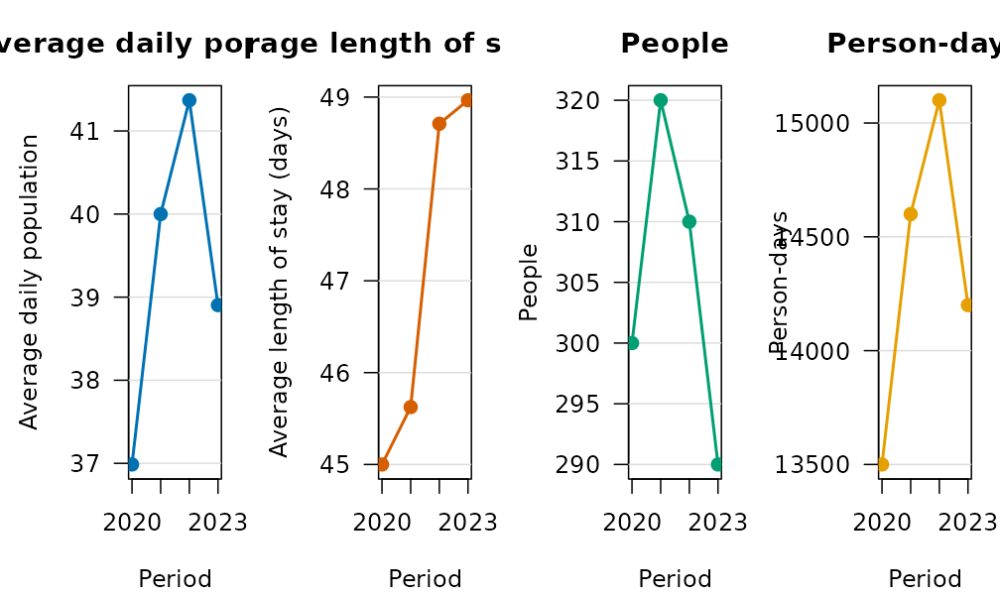
Period-over-period change with its interval, coloured by verdict:
y <- yoy(data.frame(year = 2018:2023, n = c(40, 44, 41, 55, 52, 61)), value = "n",
period = "year")
plot(y)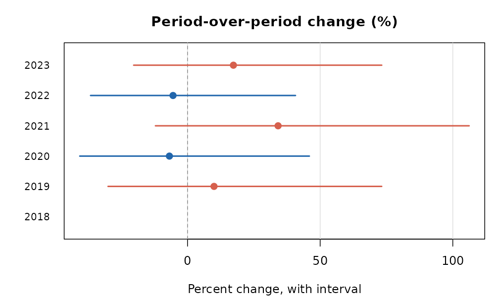
Rates with their intervals, and the change in a rate:
d <- data.frame(division = rep(c("north", "east", "west"), 2), year = rep(2022:2023, each = 3),
stops = c(120, 90, 60, 150, 85, 70), residents = c(1e4, 8e3, 5e3, 1e4, 8e3, 5e3))
plot(rate(d[d$year == 2023, ], count = "stops", population = "residents", by = "division"))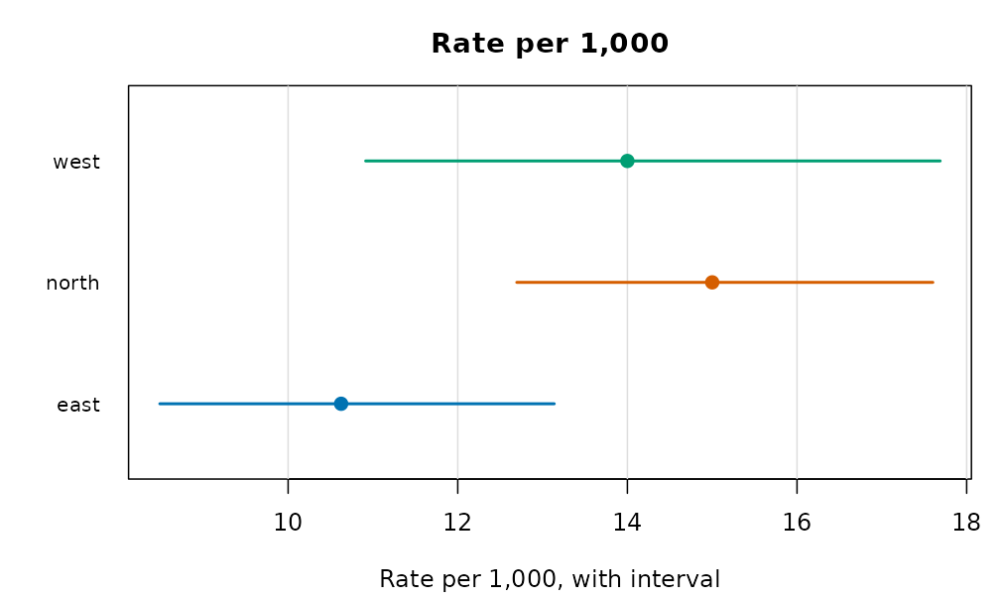
plot(rate_change(d, count = "stops", population = "residents", period = "year", by = "division"))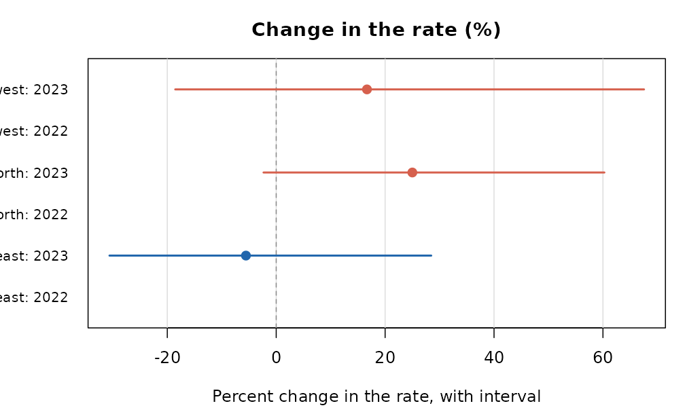
First digits against Benford’s law, the power curve of a check, and a permutation null:
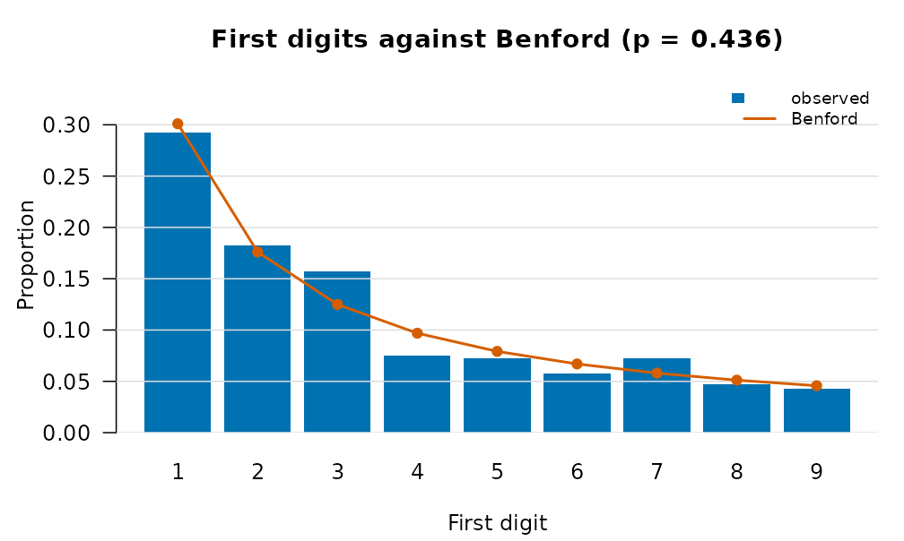
dd <- data.frame(x = rnorm(120), y = rnorm(120))
shift <- function(z, s) {
z$y <- z$y + s * z$x
z
}
plot(capsule_power(dd, function(z) cor(z$x, z$y), inject = shift, treatment = "x",
sizes = c(0, 0.2, 0.4, 0.6), n = 49, reps = 6, seed = 1))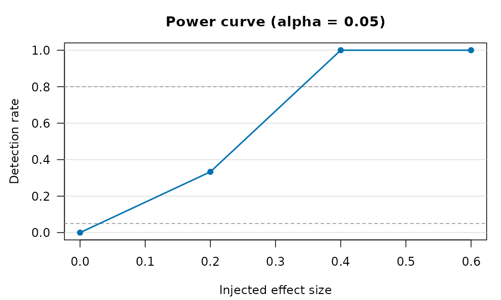
Air pollution
The concentration-response curve with the exposure marked, the burden
it implies, and the whole verify_pollution() report on one
page (curve, burden and the concentration curve of exposure over
income):
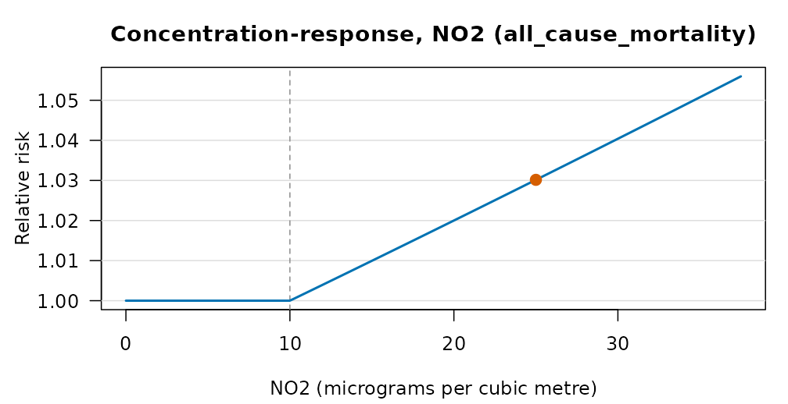
plot(pollution_burden(25, 1, 0.008, 1e6, pollutant = "NO2"))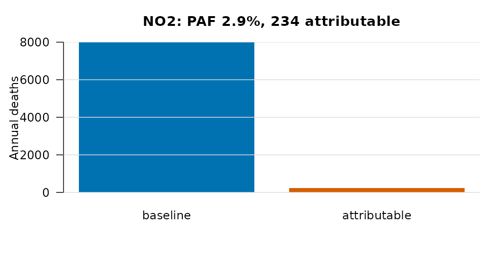
plot(verify_pollution("no2", demo = TRUE))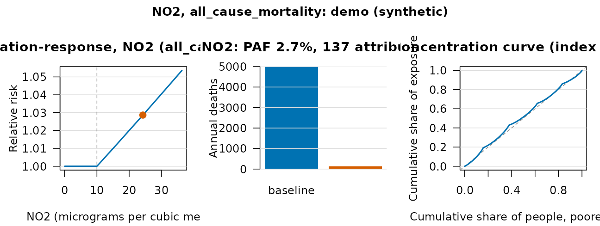
A plume on a grid, and the particle cloud of the random walk:
plot(plume_field(q = 100, u = 5, h = 50, x = seq(100, 3000, by = 100),
y = seq(-500, 500, by = 50)))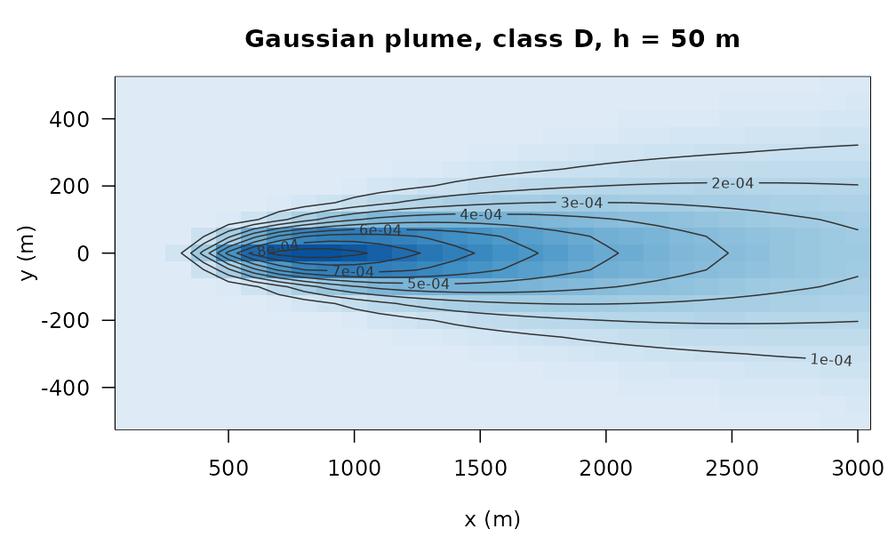
plot(lagrangian_particles(500, 0, 0, u = 2, v = 0.5, kx = 1, ky = 1, dt = 1, n_steps = 60,
grid = c(0, 200, -60, 100, 40, 32)))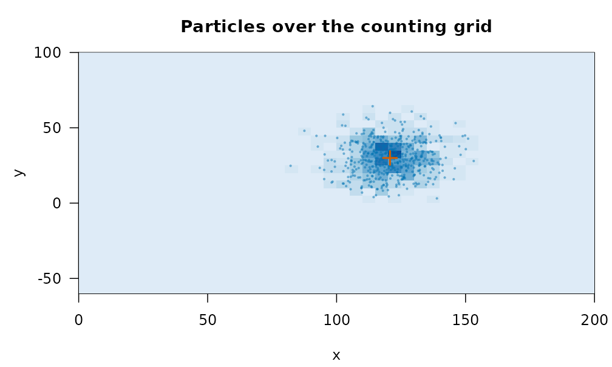
The footprint of a computation, with its equivalents:
plot(compute_footprint(sum(sqrt(1:1e5)), location = "CA", cpu_power_w = 45, memory_gb = 8))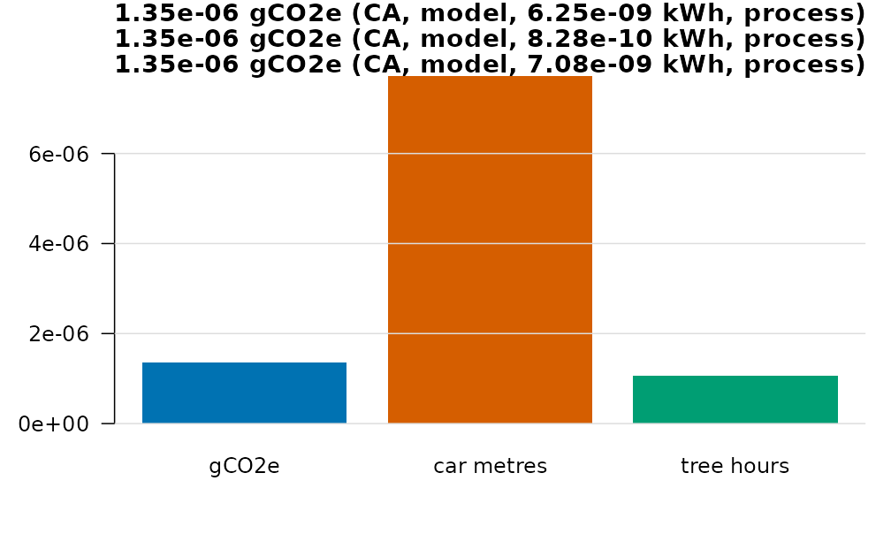
Customising
Every method takes main, col (or a
palette name), grid, and ... for
the base-graphics call. bricklayer_plot_options() sets the
session defaults; bricklayer_palette() gives the
colour-blind-safe sets the package uses.
plot(sf, what = "alos", col = "firebrick", main = "Length of stay (days)", lwd = 3)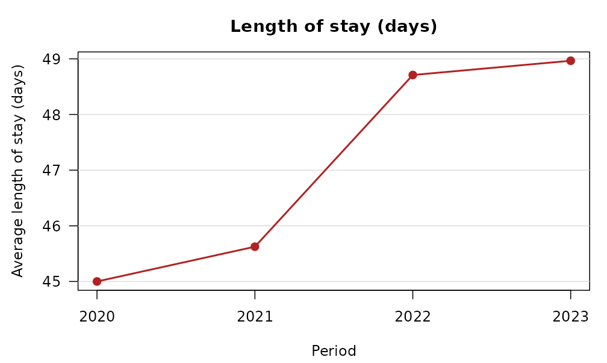
old <- bricklayer_plot_options(palette = "grey", grid = FALSE)
plot(y, what = "value")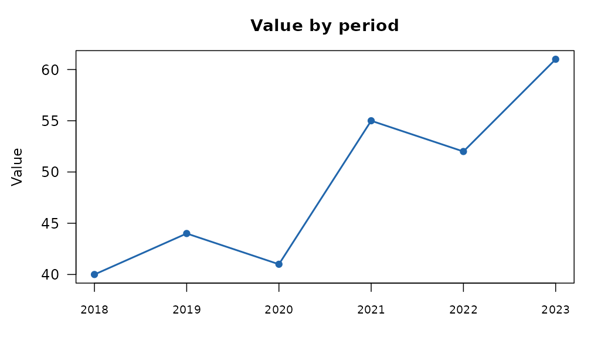
bricklayer_plot_options(palette = old$palette, grid = old$grid)
bricklayer_palette("okabe", 4)
#> [1] "#0072B2" "#D55E00" "#009E73" "#E69F00"Every method returns the data it drew, invisibly:
drawn <- plot(y)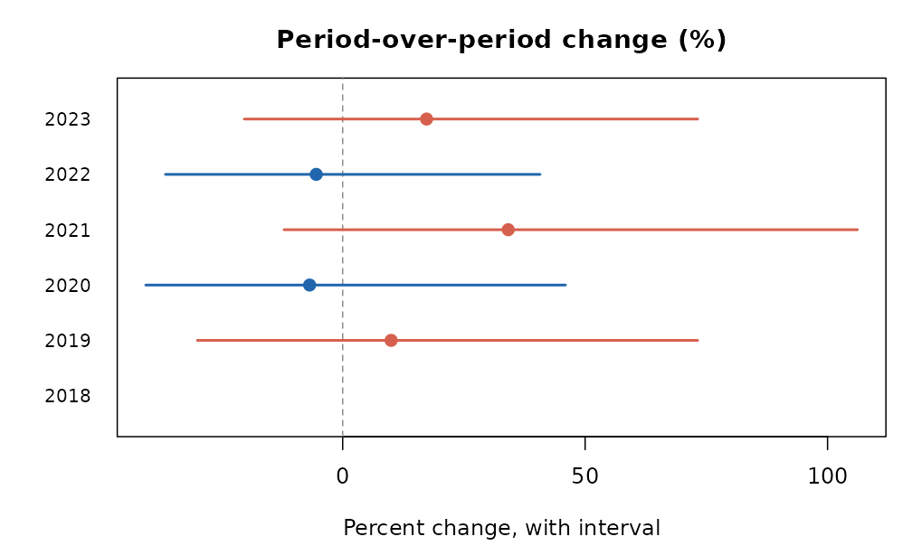
head(drawn, 3)
#> label pct_change lower upper verdict
#> 1 2018 NA NA NA <NA>
#> 2 2019 10.000000 -29.95683 73.20735 up
#> 3 2020 -6.818182 -40.61975 45.94265 downResults that are plain data frames have a plot function of their own: the Lorenz curve of a vector, and the funnel plot of observed against expected counts per area.
plot_lorenz(c(1, 1, 2, 3, 5, 8, 13, 21))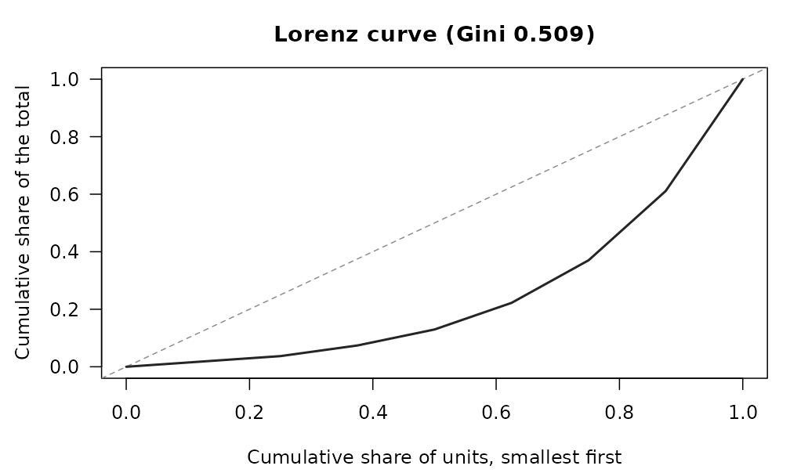
plot_funnel(observed = c(4, 20, 50, 9, 31), expected = c(5, 22, 40, 20, 30),
area = c("a", "b", "c", "d", "e"))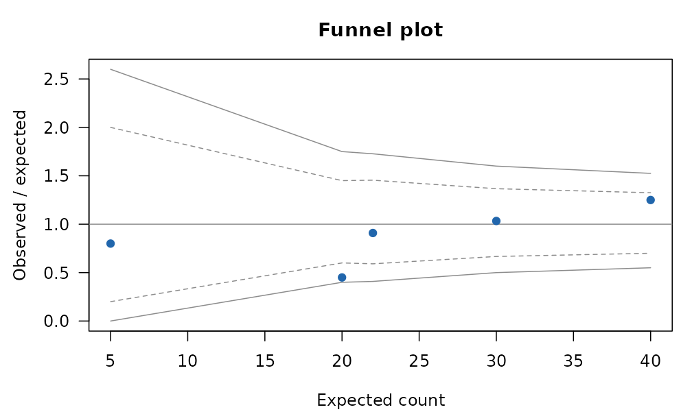